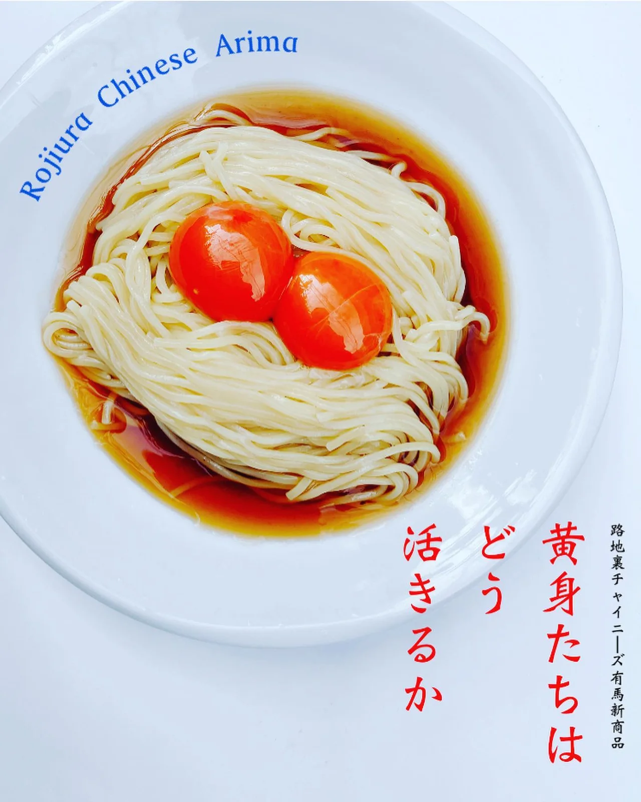

2023年8月7日
料理長が考案したTK麺（卵かけ麺）に、名前を付けただけだ。

料理長が考案したTK麺（卵かけ麺）に、名前を付けただけだ。 けしてふざけてはいない。 一、卵は龍の卵を２個 一、スープも完全手作り 一、麺はツルミ製麺所から納品 『冷やしTK麺（卵かけ麺） 〜黄身たちはどう活きるのか〜』 黄身の活かし方、、、 2個あるあから黄身達の活かし方、、 黄身たちはどう活きるのか、、、？ あっさりスープと龍のたまごのコクが、食欲のうせる暑い夏なのに何杯でもたべれてしまう。 新たな有馬の〆メニュー シンプル イズ ベスト それでも物足りない方は味変で香味ニンニク醤油も用意。 今年の夏にしか命名できない限定商品をぜひご賞味いただきたい。 ＊ 予期せぬ事態が起きた場合販売を中止する可能性があります。 ＊一日数量限定。 #訴えないでください #ジブリは好きです #天空の城ラピュタが好きです #君たちはどう生きるか #黄身たちはどう活きるか #まだ見てません #中華バル#中華#中華料理#福島区グルメ#路地裏#B級グルメ#中国#チャイニーズ#路地裏チャイニーズ有馬#有馬#シュウマイ#餃子#点心#パクチー#麻婆豆腐 #冷やし中華